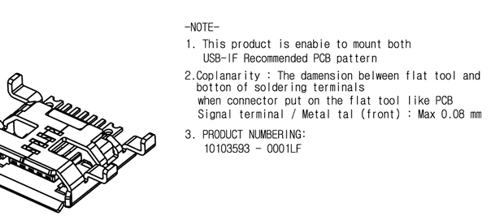

Engineers Write Good!
Lately I have been combing through datasheets, and sometimes it feels like I'm wearing a dark helmet in a blistering desert. No one expects engineers to be poets, but still. Here are a few gems that are extra unhelpful.
All the USB documentation is wordy, but this particular sentence is comical. It was taken from the USB 2.0 Specification, page 31.[1]
Oh. Can you guess what HC in HCD stands for? (in all fairness though, this is a specification not an application note)
The next gem is the notes on this mechanical drawing by FCI. [2] In their defense, FCI is a French company.
There are actually many well written datasheets out there. Part of the problem is that a well written datasheet, at one person's level, can be an enigma to some but redundant to others.
I'm not sure if there is a solution to this, but I am trying to document more of my work to learn. A good question to ask any Daytonite is "Do you have the Wright Stuff?"
[1] link to the USB 2.0 Specification
[2] copy of the FCI Micro USB type-B Datasheet